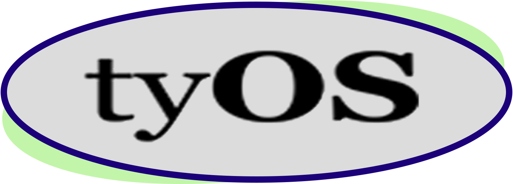
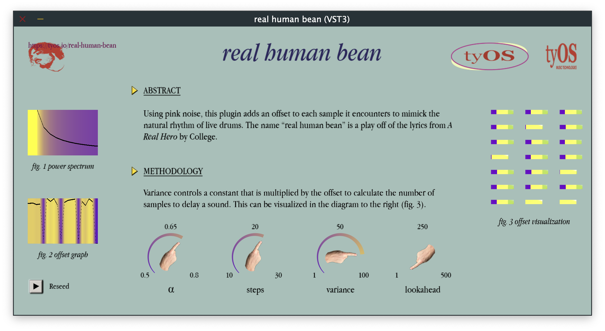
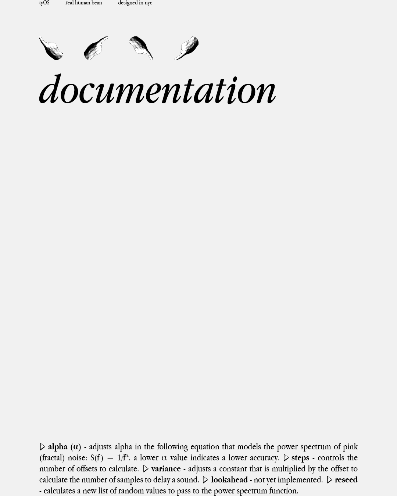
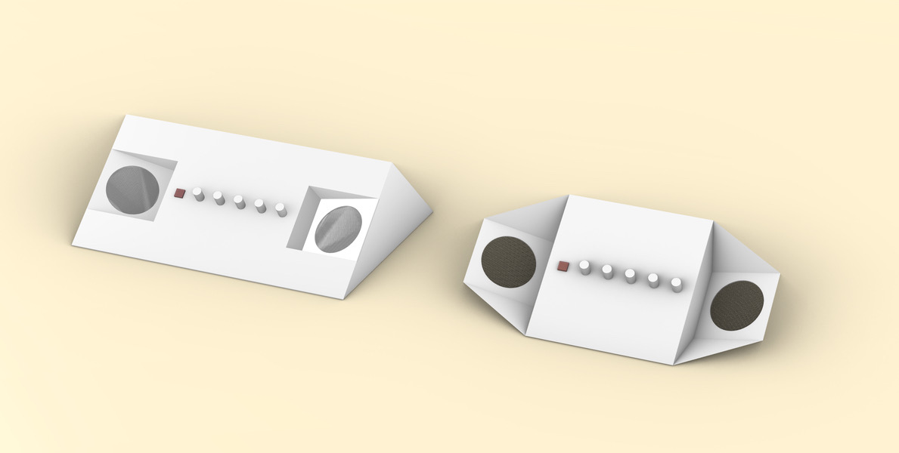
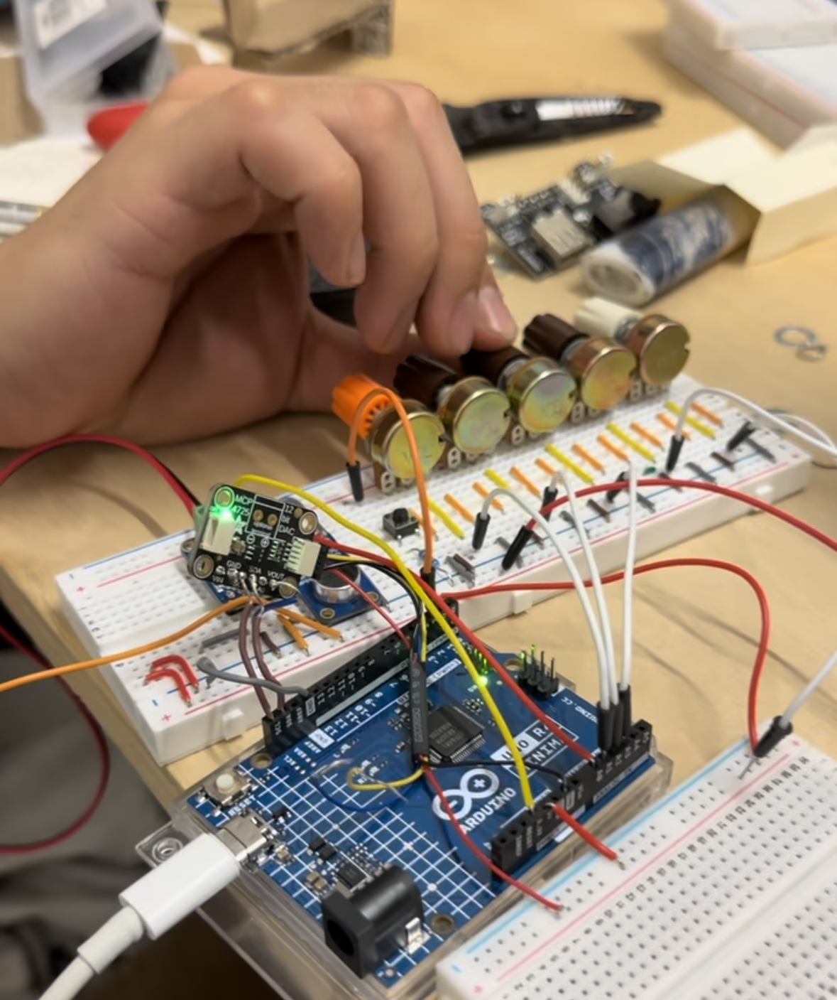
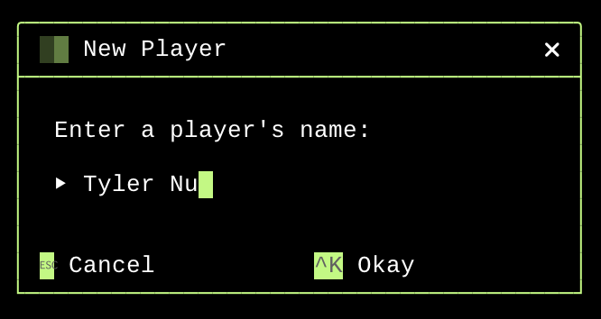

Mission
цель
Mission
цель
 Technology
технология
Story
рассказ
Jobs
занятие
Technology
технология
Story
рассказ
Jobs
занятие

At tyOS, we pride ourselves on making beautiful, easy to use technologies for whatever you may need. While many of our projects are private, we do have some open source projects below for you to peruse. We would love to hear your feedback!
Table of Contents:
Everything © Copyright 2025 tyOS
real human bean
real human bean is an audio plugin that applies humanized offsets to a stream of samples, making the samples sound as if a person played them. It is ideal for channels that contain one drum part, such as a hi hat channel, snare channel, etc.fig a. screenshot of plugin

fig b. demo of plugin

fig c. documentationYou can check out the source code here and download the latest VST3 here.
Fractal Renderer
We wanted to experiment with rendering fractals in various ways. We initially wanted to focus on some sort of 3D representation of a fractal (different from a Mandlebulb) and ended up with some interesting renders. We ultimately settled on just making a traditional fractal renderer. Currently, it only supports the Mandlebrot set. However, this project is ongoing, and we'd love to ultimately support all sorts of fractals and allow users to control the color palette.fig a. mandlebrot slighly 3D

 fig b. mandlebrot zoomed in
fig b. mandlebrot zoomed in
fig c. low res mandlebrot edge

 fig d. low res mandlebrot stem
fig d. low res mandlebrot stem
fig e. mandlebrot 3D based on iterations

fig f. lightspeed mandlebrot

You can check out the source code here.
A Drum Machine in Terminal
After building Trundle, we wanted to push the limits of what you can do in a command prompt. We thought recreating the FL Studio drum machine using Trundle would be a fun experiment in user experience with the goal being making a TUI for drum programming that is faster than using FL Studio's with a mouse. The experiment ultimately failed, but building a drum machine was fun for the whole team and a great way to spend January.fig a. making a beat
 fig b. sampler view
fig b. sampler view
fig c. entire view

 fig d. sample browser
fig d. sample browser
You can check out the source code here.
Granular Synth
a collaboration with Ritual ObjectWe are building a granular synth with an Arduino and designing a case for it. Granular synthesis is the process of taking a small sample, or "grain", of some audio (e.g. 0.1s), looping it quickly to create a new sound.
fig a. 3D mockups of the case

fig b. synth circuit

You can check out the source code here.
Trundle: A Terminal UI Library
Trundle is a C++ TUI library (will have Python bindings soon hopefully). The library provides a robust set of widgets for users to flexibly build entirely text based UIs.fig a. a file browser tree view

 fig b. searching a tree view
fig b. searching a tree view
fig c. a simple text editor

fig d. a prompt with a text field

You can check out the source code here.
tyWorld
tyWorld is a simple OpenGL planet simulator written in C++. The planets are cubes and the asteroid belts are rendered using instanced rendering. The focus of this project was to learn about different types of lighting.fig a. demo of tyWorld
You can check out the source code here.
tyOS Assets
We designed our brand ourselves. Here are the assets used to make this website. We do this because we don't believe in web frameworks or web development at all.fig a. assets

fig b. alt logo 1